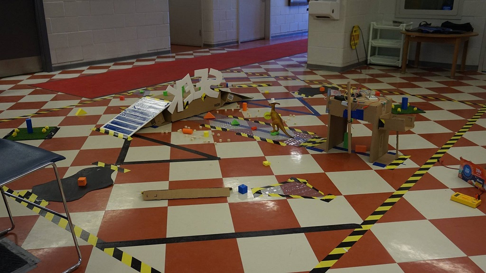
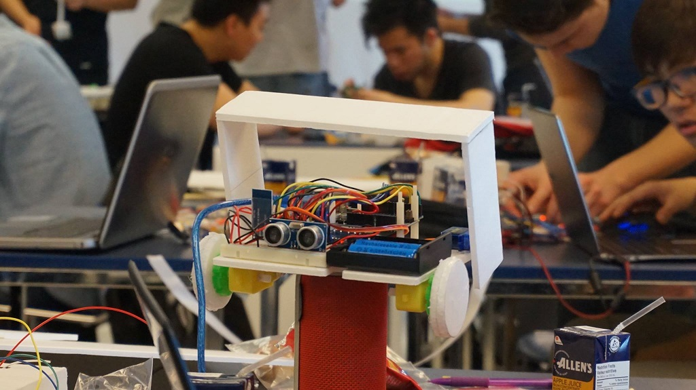

SEEK is an annual competition hosted by Robotics for Space Exploration (RSX). Competitors are given a task, some robotic components to design and build a robot that can complete a series of challenges. SEEK was first held in 2015 as a way of getting more people interested and active in robotics. We'd have to say we've been pretty successful!
SEEK is designed to provide an introduction to people new to robotics, while still being a challenge to those with more experience. We also run tutorials prior to the event, to which anyone is welcome!
Our goal is to make a self-contained event, so we will give you all of the materials you need. Best of all, you keep all of your parts afterwards for your future robotic projects!
After several hours, you'll participate in a tournament, where you test your robot head-to-head with your competitors' and compete for awesome prizes. Good luck!

Archer's Arena was founded by U of T alumni, and kindly donated tickets, some of the prizes for SEEK 2016!

RSX (Robotics for Space Exploration) was founded in 2013 to represent the University of Toronto at the University Rover Challenge. Since then, we've added a couple more projects: Cansat, which develops a rocket payload, and a High Altitude Balloon, that takes sensor readings of the atmosphere. As a relatively new club, we pride ourselves on our openness to new members regardless of skill or experience. If you're interested robotics and space, feel free to join us!
Bring a laptop, a charger and a smartphone, we'll provide the rest: snacks, lunch and components
You may bring tools, but not materials. Anything extra cannot be used on the robot
For any questions about registration, logistics or sponsorship, feel free to reach out to Rex at: